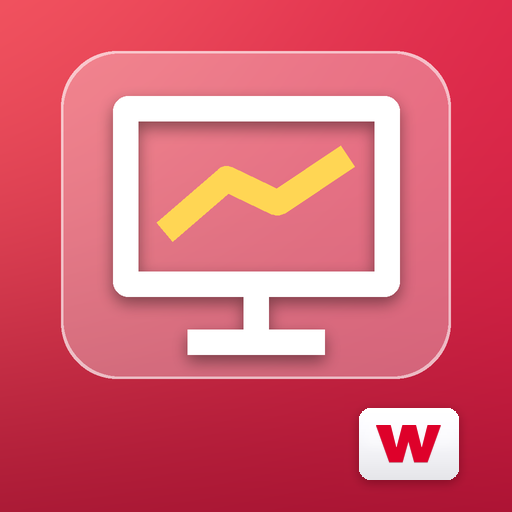

RED FLOW
Projekty a úkoly, které vás nepřerostou
Řízení projektů pro lidi, kterým jsou Asana a Jira zbytečně složité — ale komu nestačí obyčejný seznam úkolů. S umělou inteligencí, která běží přímo ve vašem zařízení nebo pod vaším vlastním klíčem.
Podrobnosti ›
Ve vývojiRED HARD WORK
Odpracované hodiny, ze kterých je faktura
Evidence odpracovaných hodin pro externí firmy, zkráceně RHW. Zapisujete práci, aplikace z ní na konci období udělá přehled pro zákazníka a připraví koncept faktury do RED FAKTu.
Podrobnosti › Ve vývoji
Ve vývoji
RED FAKT
Fakturace, která zůstane u vás
Faktury, cenové nabídky, proformy a dobropisy pro OSVČ a malé firmy. Bez předplatného, bez cizího cloudu. Data leží v obyčejné složce, kterou si vyberete.
Podrobnosti ›FOTBALOVÝ TRENÉR
Trénink mládeže, poskládaný a odžitý na hřišti
Appka pro trenéry mládežnických přípravek a žáků, kterým dochází nápady nebo čas na přípravu tréninku. Podle věkové kategorie, délky a zaměření sama poskládá trénink z knihovny cvičení a na hřišti pak provede živým odpočtem jednotlivých fází.
Podrobnosti ›